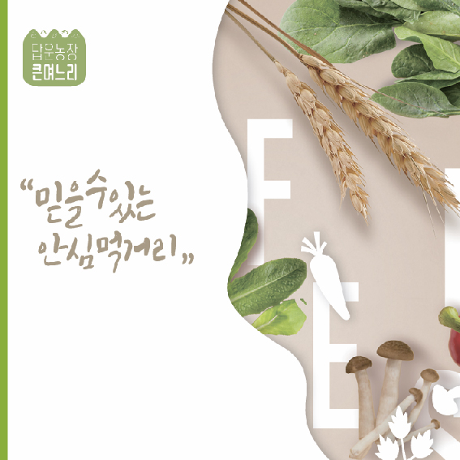
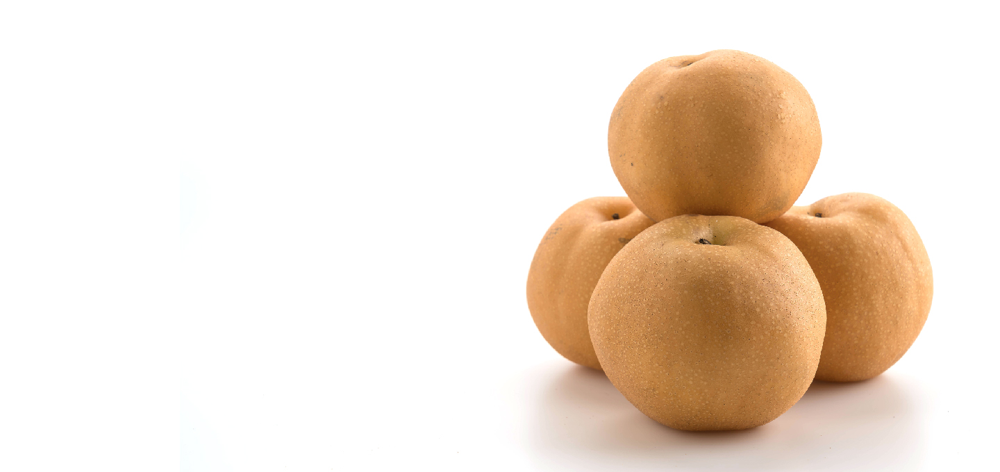
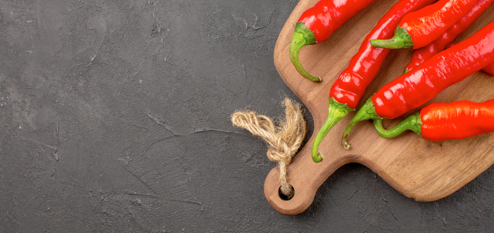
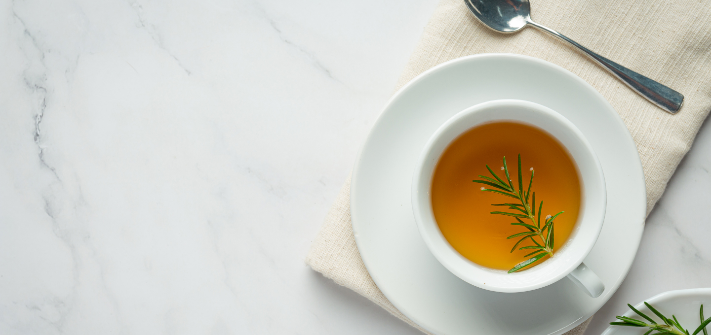

Hyesung Agricultural Corporation Co., Ltd. is...
We are a food company that secures market opportunities for local farmers and young agricultural entrepreneurs while developing healthy foods that consumers can enjoy with confidence.
-

I became a young female farmer by continuing my parents-in-law’s family farm, starting with organic pepper sales at Dabun Farm.Since starting our food business, we have created healthy foods using carefully selected local ingredients. Hyesung will support local agriculture by sourcing from young farmers and women-owned businesses while creating jobs for women returning to work.
-

01 Juice made with Korean ingredients, crafted for both taste and nutritionFor busy professionals seeking an easy way to stay healthy, parents who care about their children’s well-being, and consumers who want to start each morning fresh and healthy with nature’s gifts.
-

02 Red pepper powder that delivers both great taste and health benefitsMade with organic ingredients at peak freshness, crafted with a mother’s care for products you can trust. Experience a richer, more distinctive flavor through carefully developed taste.
-

03 Hyesung Tea Gift Set (3 Types)A personal tea ritual for your daily wellness. A carefully crafted 3-tea set made with devotion by the eldest daughter-in-law. (Chamomile / Pumpkin & Red Bean Tea / Mugeutcha)